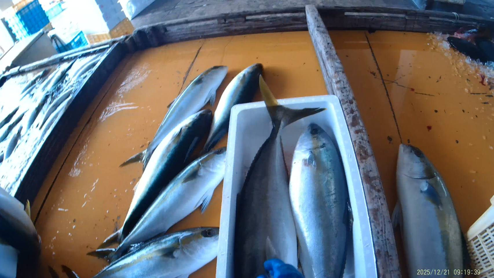
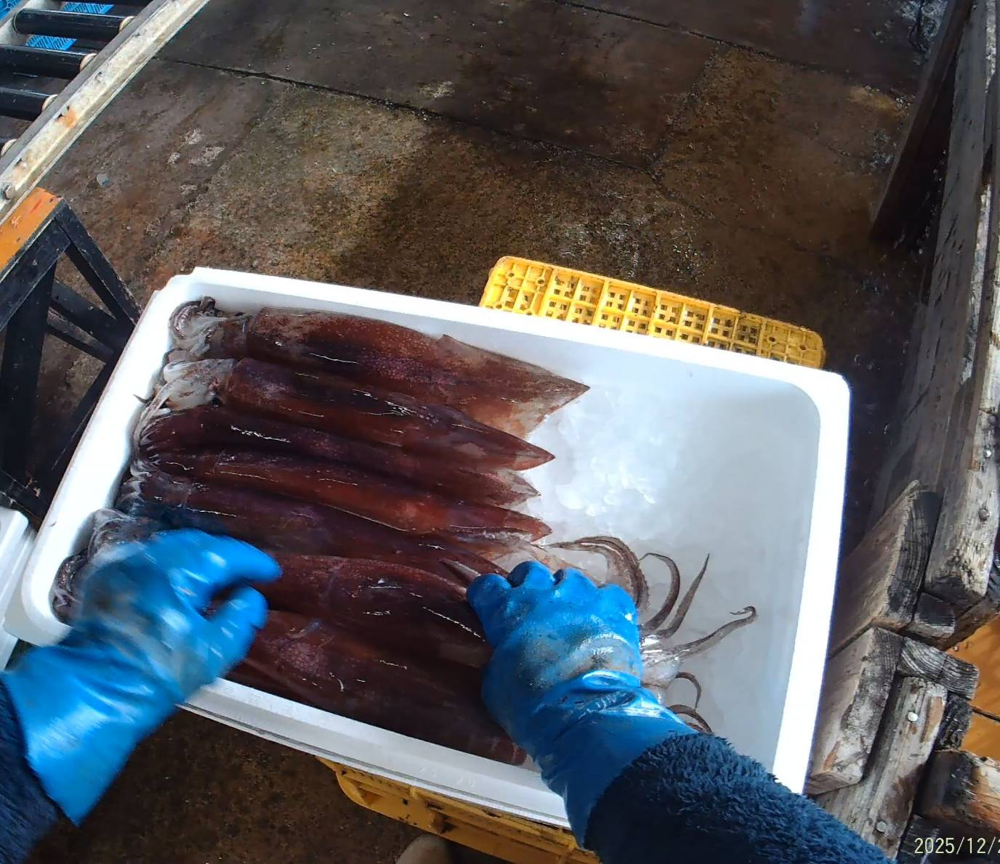
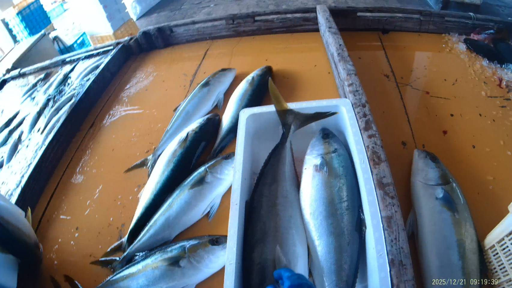
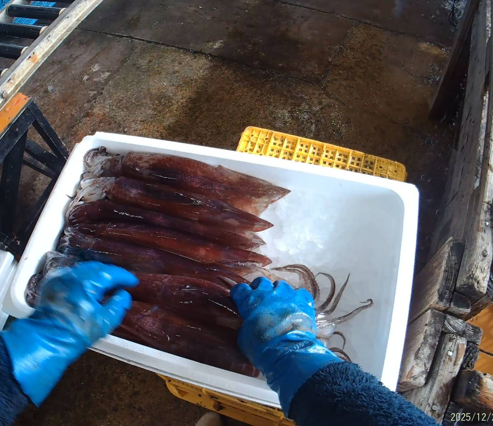

あけましておめでとうございます。
クリスマス、皆さんはどんな風に過ごしていますか？
友人や仕事仲間とプレゼント交換、チキンやケーキを用意したり、サンタのコスプレをしたり。
そんな妄想にふける…どうも私です。
今週は前週と同じような魚の入りようだった印象です。
アジやサバ、ヤズにヒラス、ワラサも少々。
ちなみに皆さん、ヒラスとブリ、どちらのほうが高く売れるかご存じですか？
漁業に精通している方はわかるかと思いますが、基本的に、ブリよりもヒラスのほうが高いです。
しかし、年末になるとブリの値段が高騰します。
それはなぜでしょうか？
年末年始にブリを食べる習慣には、縁起物としての意味合いと、旬の時期という実用的な理由の両面があります。
大きく分けて、以下の3つの理由が挙げられます。（コピペ）
1. 縁起が良い「出世魚」であるため
ブリは成長するにつれて名前が変わる**「出世魚」**の代表格です。
以前にも話しましたね。
関東： ワカシ → イナダ → ワラサ → ブリ
関西： ツバス → ハマチ → メジロ → ブリ
「大きく成長して名を変える」ことが、仕事での昇進や成功を連想させるため、新しい年を迎える際の「立身出世」を願う縁起物として定着しました。
2. 冬に最も美味しくなる「寒ブリ」の時期だから
12月から1月にかけてのブリは**「寒ブリ」**と呼ばれ、産卵を控えて最も脂が乗る時期です。
厳しい冬の荒波を越えるために体に栄養を蓄えており、身が締まっていて非常に美味です。
一年で一番質の高い時期に、家族が集まる特別な席で振る舞われるようになりました。
3. 西日本の「年取り魚（としとりざかな）」の文化
古くから、大晦日の晩餐（年取り膳）に欠かせない魚を「年取り魚」と呼びます。
西日本（主に関西、北陸、九州）：
ブリを食べる文化が強いです。特に富山や石川から長野へと運ばれた「ブリ街道」の歴史もあり、内陸部でも冬の貴重なご馳走でした。
東日本：
ブリの代わりに「鮭（サケ）」を年取り魚とする地域が多いのが特徴です。
こうした地域差はありますが、現在ではおせち料理の「照り焼き」などを通じて、全国的に年末年始の定番食材となっています。
鮭ですか～。初めて知りました。皆さんの地域ではブリと鮭どちらを食べますか？
さて、そろそろ年末年始ですね。皆さんはどう過ごすのでしょうか？
私は現在一人暮らしでして、毎年実家へ帰って家族と過ごしています。
特にすることもないので、両親に丸投げで家族旅行に連れて行ってもらったり、家でダラダラして過ごしています。
年始にはお参りに行くのですが、何年かに一度、伊勢神宮まで参拝しに行くことがあります。
実は今年、その伊勢神宮に参拝しに行く予定でして、とても楽しみです。
皆さんは伊勢神宮には行ったことがありますか？
大きな木がたくさん見れたり、人がたくさんいた印象でしたが、今年はどうでしょうね？
台湾有事の延長で、最近テレビやSNSで中国人観光客がいなくなったような話を聞くので、今年は少なかったり？
結果は次回の投稿でお伝えしようと思います。
伊勢神宮周りには、おかげ横丁やおはらい町という食べ歩きスポットがあるのをご存じですか？
なかでも有名なのは、おかげ横丁にある赤福本店ではないでしょうか。
もしかしたら赤福餅を知らない方がいると思いますので、軽く紹介させていただきますね。
赤福餅は、お餅の上にこしあんをのせた「あんころ餅」の一種です。
上品な甘さで、お餅が見えないくらいこしあんを覆いかぶせてあり、指の腹で押してあんを波立たせるように形作った見た目をしています。
セントレア空港や、名古屋駅（愛知県）でもお土産として置いてあります。
あ、ちなみに伊勢神宮は三重県です。
赤福本店では、この赤福餅と一緒に抹茶も提供していたと記憶しています。
赤福餅だけだと口の中が甘々ですが、抹茶と合わせて食べることで、程よく楽しめるかと思います。
ちなみに、抹茶は甘くない抹茶だったと思います。
それから、豚捨（ぶたすて）のコロッケとメンチカツ！
これは毎年かなりの行列ができるほどの人気です。
前回は、行列過ぎて時間がなかったので食べられませんでした。悲
今年こそはまた食べたい一品です！皆さんもどうでしょう！
なかなかおいしいですよ
今日のところはここまでとします。最後まで見ていただきありがとうございました。
皆さんも、伊勢神宮に行く機会があればおかげ横丁や、おはらい町を巡ってみてください。
次回の更新は、1月の9日になります。
下に申し訳程度の写真を掲載しています。
それではまたお会いしましょう。
よいお年を！
 


